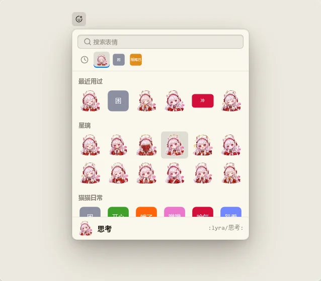
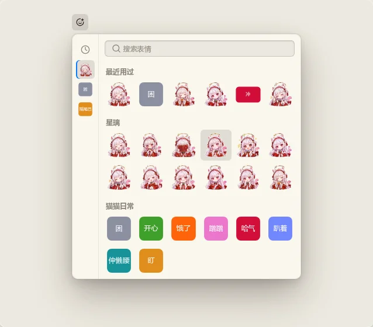
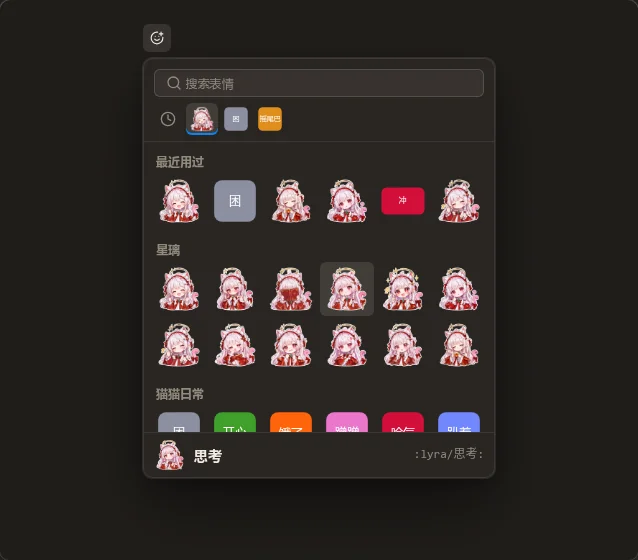
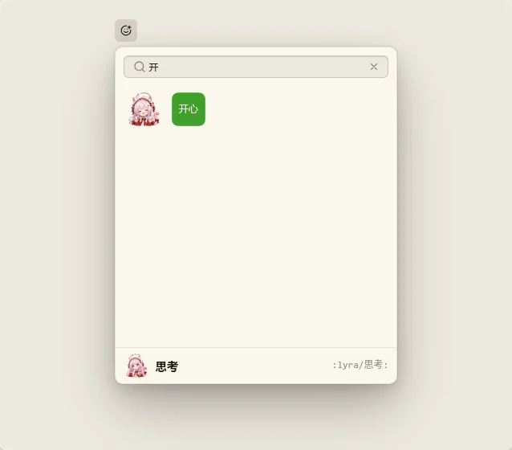
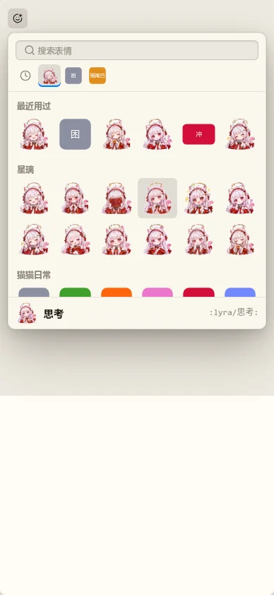
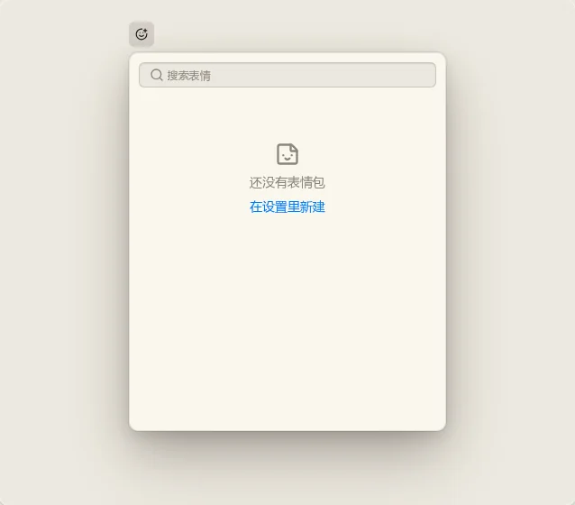
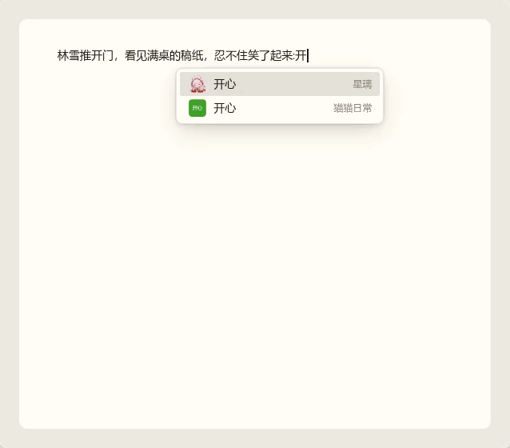
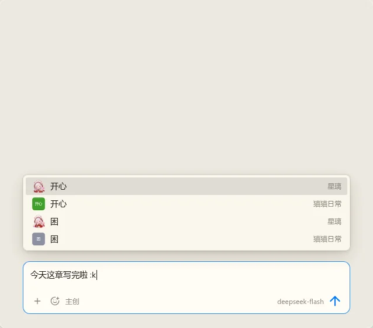
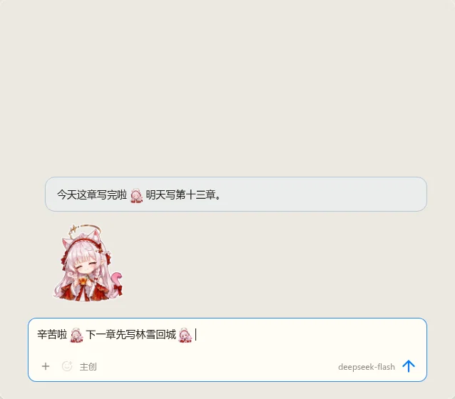
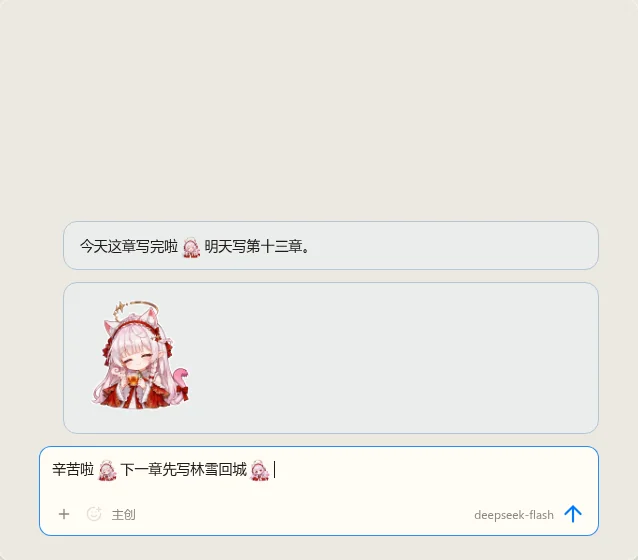

第 1 轮：表情选择器与补全
样本里“星璃”一包用的是刚生成的默认表情（第一批，画风另议）；“猫猫日常”“小狗”是色块占位。
选择器面板用哪种版式？
推荐 A：面板约 350×420，顶上搜索，表情包标签横排在搜索框下面（第一个是“最近用过”），网格按包分组、往下滚时标签跟着亮；底部一行写指着的表情的名字与写法，网格里不写字，格子能放得更密（一行 6 个）。点一下插入并关上面板，Shift 点插入后不关，方便连发几个。B 把表情包放到左边一竖列，省掉底部一行，名字只在悬停提示里。
A 顶上标签、底部写名字

指着的是“思考”，底部写名字与 :lyra/思考:
B 左边一竖列表情包

名字只在悬停提示里




补全菜单这样画行不行？
推荐同意：就是现在斜杠菜单与输入框 @ 菜单的那种列表，每行左边是 24px 的小图、名字，右边淡色写表情包的显示名（两个包都有“开心”时靠它分开）。编辑器里跟着光标在下方；输入框里与外框同宽、在上方，和现有的 @ 菜单一样。按名字与拼音首字母筛：打 :开 与 :k 都能找到“开心”；打 :lyra/ 只列这个包。确认后插入的写法一律带包（同提示词里的写法）。

:开
:k（开心、困的首字母）只有表情的一条消息还画气泡吗？
推荐不画：聊天软件里单发一个表情都不带气泡，大图直接放在消息的位置；句子里夹着表情的照常是气泡里的行内小图。两张图上面一条都是句子里的小图，下面一条是只有表情的消息。
不画气泡

照常在气泡里

按钮放在这几处行不行？
推荐同意：
- 编辑器工具栏：图片按钮后面，“链接、图片、表情”一组；放不下时和别的按钮一样收进“⋯”。
- 斜杠菜单：“块”组里“图片”的后面。
- 输入框工具栏：左边
+的后面（上面两张图里的笑脸）；单行版式放在前置按钮里。 - 选择器从按钮下方弹出（放不下翻到上方），插入在光标处；打开时焦点进搜索框，Esc 关上、焦点回正文。
已定
- 入口：编辑器打
:补全、工具栏按钮、斜杠菜单；输入框打:补全、工具栏按钮（会话里定） - 列全部有效的表情包，最前面一排“最近用过”（本机记住，至多 16 个）（会话里定）
- 半角
:前面不是英文字母或数字、后面打了至少 1 个字才弹；全角冒号不触发（会话里定） - 输入框里显示成行内小图；发出的消息与回复同一规则：单独一段且不超过 3 个时大图（会话里定）